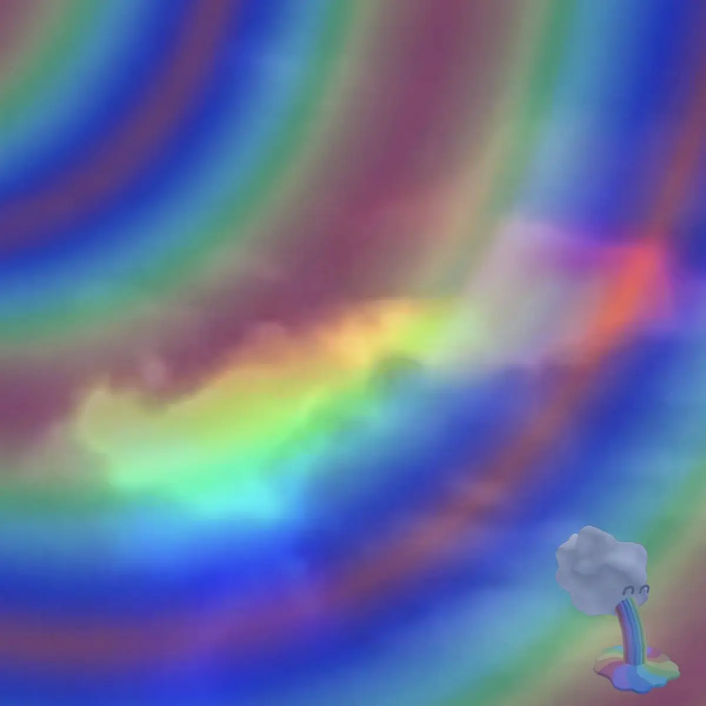

Rainbow Sparkle Dog Fantasy ~ ❀ blossom o_O ;; 🌈🌈🌈🌈🌈🌈🌈🌈🌈🌈[...]
Catalog number: BM6CM
Date released: 2025.11.16
Tracks: 2
Total runtime: 23:03
Released on: Digital, Cassette
Total copies: 6 [3 remaining]
Pricing: £0 Digital; £6 Cassette
Artist links: [Bandcamp] [RateYourMusic] [Discogs]
Album links: [Bandcamp] [RateYourMusic] [Discogs]
Gallery
{kind=link}
{kind=link}
Description
This EP album whatever u wanna call it is kinda crazyyyy but also like incredibly cool, its sorta metal kind of but mixed with some speedcore sometimes and its also really noisy and loud for the first track, very nicely textured, followed by a kinda ambient drone-y track?? Im not really sure what to say but its really interesting and cooooollll????????? and you should listen?????
Big big thanks for Jaiden for working with BMCM to have this produced u can find a ridiculous amount of his other work at jaidenmacintosh.bandcamp.com/music
Physical description
Recycled ~c60 cassette in a (sometimes) clear case and a standard 3 panel j card, printed on high quality 250gsm paper, album repeats on both sides.
Big thanks to Jaiden for working with BMCM to help produce this cassette! You may find more of his work at jaidenmacintosh.bandcamp.com/music